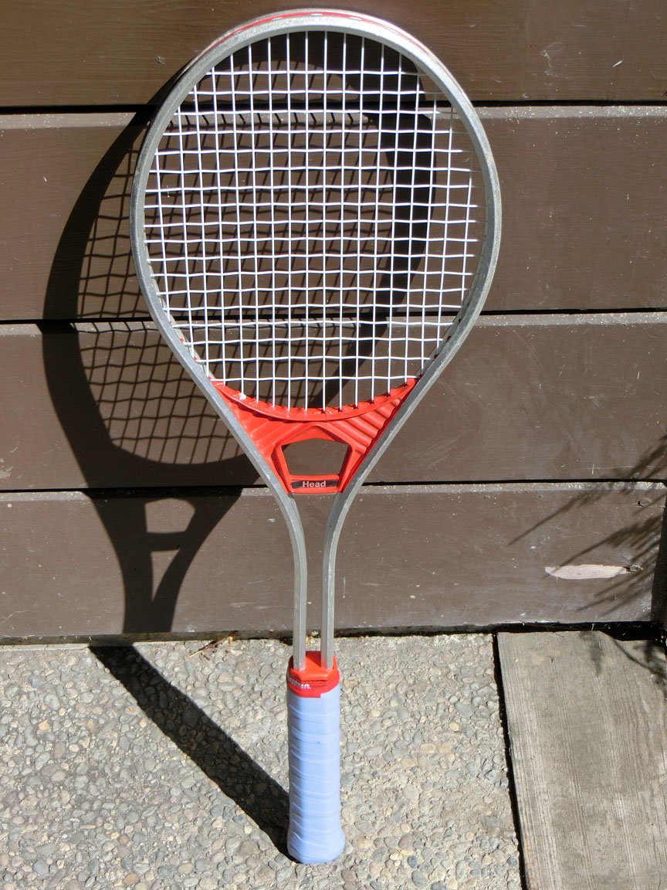
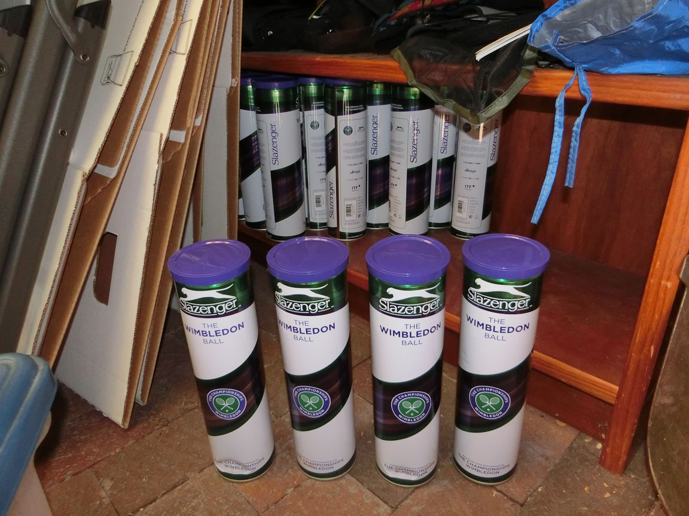

To play tennis, you need equipment. I grew up with tennis in the 1970s and 1980s. By the time I was “serious” about tennis, I played with Head Professional aluminum rackets. I loved them: indestructible unless you were ridiculously mad at the court. Until 2013, “Red Heads” were my only kind of racket: Tiny, stiff, and indestructible.

Over the decades of absence, I gave all my tennis equipment away. So in the summer of 2013, when my daughter Katrina decided she wanted to play, I had to buy new equipment. There is only one right place to by tennis equipment. A tennis shop. No, don’t go online. No, don’t go to Sports Authority (feel free to go there for other things). You buy tennis equipment from a “Pro”: from someone that is at least a 4.x and who can talk to you about your game. That is if you want to be good. If not, just go to a flea market.
My nearest Tennis Shop is Tennis Town and Country http://tennistownandcountry.com . Over the year I transformed, I may have spent 100 hours in the shop. But that first hour with Caden and Todor was critical: What racket should my daughter get? And what racket should I get? And finally, what balls should we play with?
It may not have been critical that we get all this perfect the first time, but a year later I play with exactly the same racket. Actually five of them. And after a year of growth physically and in skill, my daughter gave me her racket as a targeting racket1. So as far as I can tell, Todor and Caden completely nailed it. My daughter played for a year with a Wilson Roger Federer 24”, and my racket collection started with a Head Speed MP. My grip is slightly small for me, but that is because I put Tourna Grip tape on it, which adds another 1/8th maybe. I have changed lots of different things about my game, my grip, my strings, and lots of other equipment. But through a year of changes, I still play with the Head Speed MP.

Why? Because it is an awesome racket!!! And it is still better than I am, even as I wander into the 5.x-ish territory. I did one day play with a Babolet Pure Strike 18x20. I admit that is also an awesome racket!!! Actually it felt like I imagine smoking crack might feel like. I had such insane amounts of control that I felt I was fiddling with millimeters. But I thought the drug too strong and didn’t want to swap out my five rackets. And then Head came out with Lynx strings, which was a good fraction of the same drug.
So in one hour we had the two rackets we needed for the courts. I also bought some Slazenger Wimbledon balls, and although I am capable of playing with other balls, over the year I would purchase dozens of cans of only this one kind of ball.

So we have rackets and balls, what else do we need?
The only right answer is nothing. Yet. No giant bag for rackets you don’t have. No fancy Fila’s that feel as light as the air. No tennis shoes. You don’t need any of that the first day.
But feel free to buy it: it supports the tennis shop and you could definitely have an awesome wardrobe. Especially try out the biking shirts which will help women carry tennis balls (at all) and people who need to practice their serve (i.e. everyone) can carry six to ten balls at a time and do away with the ball hopper.
-
A racket you place into the top of the net so you can see where you are serving.↩